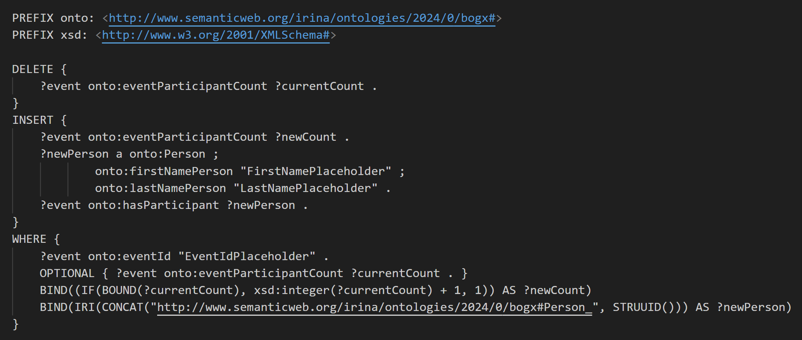

Technical Report Bogx (Botanical gardens smart explorer)
- Authors
- Aflori Irina & Cotiugă Ionela
- Affiliation
- Faculty of Computer Science, "Alexandru Ioan Cuza" University in Iași
Table of contents
- Abstract
- 1. Introduction
- 1.1 Motivation
- 1.2 Purpose
- 2. Description
- 2.1 User types and features
- 2.2 Operating system
- 3. Technologies and libraries used
- 3.1 App Architecture
- 3.2 RDF-based knowledge models & the modeling of our ontology
- 3.3 Pragmatic use of external data/knowledge sources & SPARQL queries
- 3.4 REST API specification & Implemented API
- 4. User interface interaction
- 4.1 Landing Page
- 4.2 Favorite seasons Form Page
- 4.3 Map Page
- 4.4 Events Page
- 4.5 Join an event Page
- 4.6 Add a feedback to an event Page
- 4.7 Plant category page
- 4.8 Plants from a specific category page
- 4.9 Plant informations page
- 4.10 Add a comment/feedback to a plant
- 4.11 View all comments/feedbacks for plants
- 4.12 View taxes and services for entrance to Iasi Botanical Garden Page
- 5. Requirements and characteristics of the system
- 5.1 Functional requirements
- 5.2 Non-Functional requirements
- 6. How this solution conforms to the linked data principles
- 7. Project Progress
- 8. Conclusion
- 9. Bibliography
Abstract
This document is intended for Bogx application users and provides detailed explanations regarding how the system is structured, all of its functionalities, and the requirements that a potential client needs to meet in order to use it.
1. Introduction
1.1 Motivation
Bogx (Botanical Gardens Smart Explorer) is a Web application designed to offer users interested in the botanical field an innovative, intuitive, and easy way to access information about plants, filtered according to their own preferences, as well as a method to interact with scheduled events at the Botanical Garden in Iasi. The map of the Iasi Botanical Garden provided in the application offers an overview of the location of plants in that area.
1.2 Purpose
The main purpose of the application is to provide a digital and modern way of displaying educational information about various species of plants, allowing users to explore the Iasi Botanical Garden through an interactive map.
2. Description
2.1 User features
In this section we illustrate a Use Case diagram that highlights the
navigation possibilities of a user, when accessing the application.
Use Cases Diagram
2.2 Operating system
The user can use any hardware platform, respectively operating system, which allows access to one of the following browsers: Chrome, Microsoft Edge, Firefox, Internet Explorer, Safari.
3. Technologies and libraries used
- React is used for builduing the user interface, to efficiently manage the UI state, handle user inputs and update the interface in response to changes.
- Java serves as the backend programming language for the application, being well-suited for processing complex tasks, handling data, and interfacing with external APIs, contributing to the overall functionality and performance of the Bogx web application. We opted for Spring Boot, part of the larger Spring Framework as it offers a wide range of features in the development process.
- RDF is employed for representing and linking data about plants, events, markers, feedback, etc. in a semantic and structured format. It enables the creation of a knowledge graph that can be queried and analyzed for comprehensive data.
- SPARQL is a query language for RDF data. By using SPARQL queries, users can interact with the application to obtain detailed and customized information about plants, taxonomy, and other relevant data.
- Apache Jena Framework provides tools and libraries for RDF processing, storage, and querying. In Bogx application, Apache Jena facilitates the handling of RDF data, allowing for efficient storage, retrieval, and manipulation of information. We used Apache Jena Fuseki server, a popular open-source SPARQL server that provides capabilities for storing, querying, and managing RDF data.
- Taxonomies are utilized for organizing and categorizing plant information in a hierarchical manner. This hierarchical classification system helps users navigate and explore plant data more efficiently.
- Schema.org markup is incorporated to enhance the search engine visibility and understanding of the Bogx web application. It provide search engines with structured information about plants, enabling richer search results and potentially improving the discoverability of the content.
- The Google Maps JavaScript API enhances the application by providing an interactive map where users can explore the botanical garden or specific regions with visual representations on a map.
3.1 App Architecture
The diagram presented below shows the architecture of the application and how it interacts with the
technologies and libraries used.
The process begins with user interaction on their device through a web browser.
The frontend application, built using React.js, handles the user interface and sends HTTP requests
to
the backend API.
The backend application, developed in Java, serves as the core of the application. It contains
controllers for handling incoming
requests and service business logic for processing data.
The backend app interacts with a SPARQL processor. This processor is responsible for processing
SPARQL
queries, initiating updates to the RDF store, and providing a comprehensive view of linked data.
The SPARQL processor facilitates changes to the RDF store, ensuring that the linked data
representation
is updated.
After updates are made in the RDF store, the results are communicated back to the backend Java
application.
The backend app processes the results, consolidates the data from the RDF store, and prepares a JSON
response.
The JSON response is then sent back to the frontend React.js application, which interprets the data
and
updates the user interface accordingly.
The final step involves sending the processed data back to the user's device, completing the user
interaction loop.
App Architecture Diagram
3.2 RDF-based knowledge models & the modeling of our ontology
We have designed our ontology by taking into account both the needs of a user when accessing the application and the importance of correct and consistent modeling, characterized by effectiveness, expressiveness, and practical utility.
We will detail a few important aspects regarding the designed RDF-based knowledge model:
- Expressiveness of the vocabulary: we consider that we detailed the vocabulary to accurately represent the domain's entities and their relationships. For example, distinguishing between Plant and PlantSpecies allows for capturing both individual plant instances and their broader classifications. Also, our model accommodate a wide range of plant-related data, from botanical characteristics to care instructions. This flexibility supports diverse applications, from educational content to garden management.
- User interaction: We considered how users will interact with the ontology. For instance, Marker entities could be linked to physical locations in the Bogx app Google Maps map, enhancing user navigation and engagement.
- Feedback integration: Incorporating EventFeedback and PlantFeedback classes enables collecting valuable insights from visitors, which can inform future improvements. This feedback loop enhances the system's value to users.
- Consistency: We have ensured that we have a consistent hierarchy within the ontology, such as a clear parent-child relationship between PlantSpecies and individual Plant instances. This structure aids in querying and data analysis.
In the following section, we will present representative diagrams to understand the modeling of our ontology:
- PlantSpecies: a class that contains 2 data properties: the name of the plant category and a representative image. This class categorizes plants into distinct species, based on shared botanical characteristics, genetic makeup, and taxonomy. It serves as a crucial reference for understanding the diversity and relationships among plants. This classification aids in the systematic study and preservation of plant biodiversity.
- Plant: a class that refers to the necessary details for displaying information about a plant (name, description, image of the plant, its location, maintenance tips, diseases that may appear). This class serves as the foundation for tracking and managing the lifecycle and conditions of each plant in a garden or natural setting.
- isPartOf: an object property that creates a hierarchical relationship between individual Plant instances and their corresponding PlantSpecies, signifying that each Plant belongs to or is a member of a specific PlantSpecies. This linkage allows for the organization of plants into their taxonomic categories, facilitating easier management, identification, and study of botanical diversity within the system.
- Season: a class that categorizes the year into four distinct instances: Spring, Summer, Autumn, and Winter, reflecting the annual climatic cycles that significantly affect plant growth and behavior.
- occursInSeason: an object property that establishes a link between PlantSpecies and the Season class, indicating the specific seasons during which a plant species typically grows, flowers, or undergoes particular lifecycle phases. This relationship allows for the organization and presentation of plant species information in a seasonal context, aiding in the planning of garden maintenance, and enhancing the educational content for visitors by highlighting seasonal plant characteristics. It enriches the understanding of how plant species interact with their environment and respond to seasonal changes.
- Marker: a class that is used in the geographical and informational mapping of a botanical garden. It includes data properties like latitudeMarker and longitudeMarker, which specify the precise geographic coordinates of points of interest within the garden. The imageMarker property can hold a visual representation or icon for the marker, enhancing the navigational experience for visitors. This class is key to creating interactive maps that guide visitors through the garden's attractions and areas of interest.
- hasMarker: an object property that establishes a direct association between PlantSpecies and Marker, indicating that a specific PlantSpecies is linked to a geographical point or area within a botanical garden as represented by a Marker. This relationship enables the mapping of plant species to their physical locations, providing visitors with precise information on where to find particular plant species and offering visual cues through the Marker's image.
- GardenTax: a class encapsulates the financial aspects related to visiting or utilizing services within a botanical garden. It refers to data properties such as taxPrice, indicating the cost associated with a particular service or access fee, and taxName, which describes the nature of the tax or service charge. This class plays a vital role in providing transparent pricing information to visitors and facilitating the management of garden revenues.
- Event: a class representation of organized activities within a botanical garden. It encompasses several data properties to describe each event, including eventId for unique identification, eventName for the title, eventDescription for details about what the event entails, eventStartTime and eventStopTime for scheduling, eventCapacity to limit the number of participants, and eventParticipantCount to track current attendance. This class is essential for managing events, from educational workshops to special exhibitions, ensuring that attendees have all the information they need for participation and that organizers can effectively manage event logistics and capacity.
- Person: a class that represents individuals in the context of a system, focusing on capturing essential personal identifiers. This class has data properties lastNamePerson and firstNamePerson to store the last and first names of individuals. These properties facilitate the clear identification, sorting, and referencing of persons within various operations of the system, such as event registration and feedback submission.
- hasParticipant: an object property that establishes a link between the Event class and the Person class, signifying that an individual (Person) is attending or participating in a specific event (Event). This relationship is essential for managing event logistics, such as tracking attendance, personalizing event experiences, and facilitating communication between event organizers and attendees.
- Feedback: a class that serves as a foundational structure designed to capture and organize user input regarding various aspects of the system, particularly focusing on user experiences with events and plants. It primarily includes the feedbackComment data property, which allows users to articulate their thoughts, suggestions, and overall impressions in a textual format.
- EventFeedback: a subclass of class Feedback that is concentrating on experiences related to events hosted or facilitated by the system. It inherits the generic feedbackComment but also includes a unique feedbackName property. This property allows for the association of feedback with specific events or aspects thereof, providing a label or title to the feedback entry. This specificity aids in the categorization and analysis of feedback, making it easier for organizers to identify areas of success or aspects needing attention, thereby directly contributing to the enhancement of future event planning and execution.
- hasEventFeedback: an object property that stablishes a link between the Event class and its associated EventFeedback, indicating that specific feedback is directly related to a particular event. This relationship allows for the collection, organization, and analysis of feedback specific to each event, enabling event organizers to gauge participant satisfaction, identify areas for improvement, and understand the overall impact of the event on its attendees.
- PlantFeedback: a subclass of class Feedback that focuses specifically on user responses related to individual plants or plant species within the system. In addition to inheriting the feedbackComment property, it introduces feedbackDate and feedbackImage properties. The feedbackDate property records the date on which the feedback was provided, allowing for temporal analysis of user feedback. The feedbackImage property enables users to upload visual evidence or reflections, enriching the feedback with visual context.
- hasPlantFeedback: an object property that forms a connection between individual Plant entities and PlantFeedback, signifying the association of specific user feedback with a particular plant or plant species. This linkage is instrumental in compiling detailed insights and observations from users regarding plant health, aesthetics, informational content, or visitor experiences related to the plant. Facilitating a direct channel for receiving feedback, this property enables botanists, gardeners, and educators to monitor and enhance the care, presentation, and educational value of plants based on real-world interactions and impressions captured through PlantFeedback.


3.3 Pragmatic use of external data/knowledge sources & SPARQL queries
We opted for using the DBpedia tool as a knowledge source for our ontology, so that all plant species and the plants within a species have information from DBpedia. We chose this source because it managed to enrich the ontology with scientific names, classifications, descriptions, and relevant images. This method saved time and resources compared to manually compiling such detailed information. Among the benefits of this approach is also the fact that we wanted a platform meant to offer educational, real, and important information and it managed to turn the app into a powerful learning tool. Additionally, the information and links between resources provided by DBpedia helped us form a taxonomy, a classification of plants into different plant species.
Adding information from DBpedia into our ontology and the method of integrating and using this information involved several necessary steps:
- researching on the website https://www.dbpedia.org/ to see possible information that would be useful in our application;
- finding resources for the desired plant species, in accordance with those found in the botanical garden (an example would be https://dbpedia.org/page/Chrysanthemum) and determining the necessary information for our application - in the case of plant species, we chose to display the name and image for each species;
- finding resources for each plant, creating a hierarchy so that each plant belongs to a plant species, and determining the details about a plant that we want to extract: name, description, image, etc;
- executing SPARQL queries from the ontology found in DBpedia http://dbpedia.org/ontology/ to extract exactly the desired information;
- populating our ontology with information extracted from DBpedia;
Several examples of SPARQL queries used to extract the desired information from DBpedia are:
- SPARQL query for retrieving data about plant species Chrysanthemum:
- SPARQL query for retrieving data about plants that are part of Chrysanthemum species:
3.4 REST API specification & Implemented API
The REST API specification serves a pivotal role in enabling effective
communication between the frontend React.js application and the backend Java application. It defines
the
endpoints, request-response formats, and the underlying data structures, providing a standardized
interface
for interaction.
We will present some of the most illustrative APIs of our application, to detail the implementation part:
- The "http://localhost:8081/api/plantSpecies/plants/{plantId}" endpoint is used
for retrieving and showcasing the detailed information about a plant that is part of a specific
plant species.
Endpoint URL:- Path: http://localhost:8081/api/plantSpecies/plants/{plantId}
HTTP Method:- GET - Returns the information about a plant that has a specific plantId
Parameters:-
Path Variable: plantId
Request Param: plantName
Request Param: plantSpecies
This Java method performs several key functions related to querying a SPARQL endpoint, processing the results, and populating a Plant object with the data obtained. It constructs a SPARQL query string using string concatenation:
This SPARQL query retrieves detailed attributes of a specific plant from an integrated ontology, including its description, image URL, diseases, maintenance needs, geographical marker coordinates, and the seasons it occurs in, aggregating these seasons into a single, comma-separated string. By leveraging both internal ontology definitions and external DBpedia resources, it enriches the plant's data profile, facilitating a comprehensive understanding suitable for educational, research, or gardening applications.
It executes the constructed SPARQL query against a SPARQL service running at http://localhost:3030/plants/query (on the Fuseki Server, having the dataset named "plants"). Then, it iterates over the query results, creating a new Plant object and setting its properties based on the SPARQL query's output and it returns this object, which now contains comprehensive information about the plant, including its associated seasons as derived from the RDF data.
Result:{ "plantName": "Castanea crenata", "plantId": "urn:uuid:90982369-5fa6-4ce9-a8cf-9c2491b22116", "plantDescription": "Castanea crenata, the Japanese chestnut, also known as the Korean chestnut is a species of chestnut native to Japan and Korea. Castanea crenata exhibits resistance to Phytophthora cinnamomi, the fungal pathogen that causes ink disease in several Castanea species. The mechanism of resistance of Castanea crenata to Phytophthora cinnamomi may derive from its expression of the Cast_Gnk2-like gene.", "plantImageURL": "http://commons.wikimedia.org/wiki/Special:FilePath/Castanea_crenata3.jpg?width=300", "plantDiseases": "Anthracnose fungus disease occurs in the late spring and early summer, especially if spring is cool and wet. Anthracnose is most prominent on the lower half of the tree and shows spots or lesions that range from tan to reddish brown or black. Root feeding is strongly recommended to help the tree combat the disease.\nDutch Elm disease is the most destructive shade tree disease. Dutch elm disease causes serious economic and aesthetic losses in cities and towns where the elms are the principal shade tree.\nPoplar Cankers is a fungus disease whose activity results in cankers or physical deformities.", "plantMaintenance": "Schedule a cleanup for dead, diseased and cluttered branches. It’s easy to spot cluttered branches. They’ll grow at odd angles, grow inward toward the tree’s center, or brush too closely against other branches.\nNever cut a branch flush to its trunk. Prune above the branch bark ridge and branch collar. Cutting a tree limb flush to the trunk compromises the tree’s ability to heal and fight off disease.\nUse the right pruning tools for the job. Use a hand pruner for branches under 1/2\". Use loppers to cut branches up to 1”. A pruning hand saw be used for branches over 1/2”. But never use a carpenter’s saw.", "latitudeMarker": 47.183574482701665, "longitudeMarker": 27.548175138593205, "seasons": "Spring, Summer, Autumn" } -
The "http://localhost:8081/api/events/{eventId}/join" endpoint is used
for adding a new person that wants to join an event.
Endpoint URL:- Path: http://localhost:8081/api/events/{eventId}/join
HTTP Method:- PUT - Add a new person to the list of joined people for an event that has a specific eventId
Parameters:-
Path Variable: eventId
Request Body: person
This Java method constructs a SPARQL query string for update using string concatenation: 
This SPARQL query dynamically updates an event's participant count and adds a new participant (person) to the event within an ontology. It is structured into three main sections: DELETE, INSERT, and WHERE. The DELETE clause removes the current participant count (?currentCount) for an event (?event) to prepare for updating this information. The INSERT clause inserts the updated participant count (?newCount), incremented by 1 or initialized to 1 if no count was previously recorded, creates a new Person instance (?newPerson) with the first name and last name provided by the person object, and associates the new Person instance with the event by using the onto:hasParticipant property. The WHERE clause identifies the specific event (?event) by its eventId, optionally matches the current participant count if it exists, uses the BIND function to calculate the new participant count, incrementing the existing count by 1 or defaulting to 1 if no count exists, and generates a new unique URI for the Person instance using the STRUUID() function to ensure a unique identifier for each new participant.
It executes the constructed SPARQL query against a SPARQL service running at http://localhost:3030/events/update (on the Fuseki Server, having the dataset named "events"). Then, it creates a new Person object and sets its properties based on the SPARQL query's output and increments the participant count for the specific event. - The "http://localhost:8081/api/plantSpecies/seasonRecommendations" endpoint is
used
for selecting only the plant species that occurs in one of the seasons that the user selected
(this functionality works as a recommendation, based on a completed form).
Endpoint URL:- Path: http://localhost:8081/api/plantSpecies/seasonRecommendations
HTTP Method:- GET - Returns the information about plant species that occurs in one of the seasons selected by user in a form.
- The "http://localhost:8081/api/feedback/{plantId}/feedbackPlant" endpoint is used
for adding a new feedback for a specific plant, after completing a form in Plant Details Page.
Endpoint URL:- Path: http://localhost:8081/api/feedback/{plantId}/feedbackPlant
HTTP Method:- PUT - Add a new feedback to a plant that has a specific plantId
- The "http://localhost:8081/api/markers" endpoint is used
for displaying the information about markers that will be used in the interactive map.
Endpoint URL:- Path: http://localhost:8081/api/markers
HTTP Method:- GET - Get a list with all detailed information about markers
4. User interface interaction
In this section, we will detail the most important pages of our application, creating a small guide for users.
These are some of the initial mockups created with the help of the Figma tool:
4.1 Landing Page
The main page, the entry point into the application, offers the user the possibility to start navigating our website. The users will click on the "Start your experience in our application" button, and then they will be redirected to the next page.
4.2 Favorite seasons Form Page
On this page, the user selects their favorite seasons to filter all the plants species based on these choices. The user can check from one season to all the seasons displayed. This page features a static horizontal header at the top containing the logo and the main menu of the website.
4.3 Map Page
This page illustrates the interactive map of the Botanical Garden in Iasi. Users can
see
the geographic coordinates of every clicked point on the map.
On the left side, users can visualize and track areas marked with a specific marker to locate them
more
easily. Every plant species has a marker with an intuitive image (for example, the chrysanthemum
plant
species has as marker-icon a chrysanthemum image).
On the right side, it is illustrated the directions - route functionality. Users can select a route from the entrance of the Botanical Garden to a chosen species of plant. By clicking the "Show route" button, the user can select a specific marker and the route will be displayed. After exploring the route, user can click "Clear route" button and the map will be recentered to the initial position.
4.4 Events Page
The events page is divided into two categories: a list of scheduled events that will take place in the near future and a list of events which have already taken place. Therefore, users can see what types of events are organized at the Iasi Botanical Garden and can plan to participate in them. The types of organized events may include guided tours, exhibitions for certain plants, seasonal exhibitions, nature conservation events against pollution, events that teach how to plant or classify different types of plants, caring for the animals in the Botanical Garden, and more.
4.5 Join an event Form
Users can fill out a form with their names to participate in a specific event. Generally, events organized in the Iasi Botanical Garden have a limited number of spots available. Therefore, registering for events through our application ensures an easy way to create a list of attendees, avoiding potential queues. Users can access this form by clicking on the 'Join' button attached to each event.
4.6 View persons who joined an event
For each future event, a table with the names of the people who have joined is available. This table is useful both for checking if a person who has registered appears in the table, and for transparency in filling the available spots for each event.
4.7 Add a feedback to an event Page
Users can give a feedback for a past event they attended by filling out a form with their name and desired comments. This form can be accessed by users by clicking the 'Tell us about your experience' button available in the box of each past event.
4.8 View feedback for an event
For each past event, the user can access a feedback list, where they can view all the comments and opinions of people who have participated in that event.
4.9 Plant category page
The Plant Category Page offers a curated display of diverse plant species. Users can effortlessly explore each category, gaining insights into species details and each plant belonging to that category. The plant species are filtered according to the recommendations resulting from the user completing the form with the selection of the desired seasons. Among the plant species found in the Botanical Garden of Iasi are Rose, Chrysanthemum, Medicinal Plants, Pine, Tulip, Deciduous, and others.

4.10 Plants from a specific category page
This page displays all plants from the specific plant species. After selecting a plant species, users can view a list with the name and the image of every plant. For example,for the plant species Roses, we displayed more than 60 plants. Some of the plants are Garden Roses, Rosa agrestis, Rosa banksiae, Rosa carolina, Rosa persica and others.

4.11 Plant informations page
This page displays information about a specific plant such as: the scientific name, the family it belongs to and specific characteristics such as maintenance and growth, pests and disease, flowers and foliage and the location of the plant in the botanical garden. In this way, the user can view each plant and its characteristics.
4.12 Add a comment/feedback to a plant
This form is accessed from the details of a plant and offers users the possibility to add a comment and a picture for this plant.

4.13 View all comments/feedbacks for plants
This page displays all comments and feedback provided by a user for plants. In this way, a clearer overview of the Iasi Botanical Garden and the plants found in it can be visualized.
4.14 View taxes and services for entrance to Iasi Botanical Garden Page
This page displays the list of fees and services necessary to be known by people who wish to visit the Botanical Garden for various purposes (whether it's attending events, visiting plants, having a photo session, etc.).
5. Requirements and characteristics of the system
5.1 Functional requirements
To better illustrate the functionalities of the Bogx application, we have created an app flow diagram, which presents the navigation possibilities available to a user when accessing our system.
5.1.1 Choosing favorite seasons
It allows the user to select their favorite seasons (the seasons of interest to them) in the context of filtering data based on these seasons. Consequently, the user will have access to read detailed information about plants associated with a particular season. To submit the form and proceed to the next page, the user needs to select at least one option from the four provided.
5.1.2 Visualization of the map of the Iasi Botanical Garden
The user has access to the interactive Google Maps of the Botanical Garden in Iasi, in order to visualize each area of interest within it. This way, they can explore and digitally locate specific plants, areas where certain insects are found, a greenhouse, etc.
5.1.2.1 Access a route to a selected plant
To accurately locate a specific plant within the Iasi Botanical Garden, users can access the application to show them the route from the entrance of the Botanical Garden to the plant marked on the map that they want to see.
5.1.2.2 View marked areas on the map
All plant categories will be displayed on the map with specific markers for better visibility and organization. For example, the pine zone will have a marker with an icon or suggestive image of pine plants. By clicking on a marker, the user will be able to read the geographic coordinates of the marker.
5.1.3 Consult the list of taxes and services for visiting the Iasi Botanical Garden
All details regarding the pricing options for visiting the Iasi Botanical Garden can be accessed by users on a separate page. For instance, users can find information about prices for viewing an exhibition, visiting the greenhouses, participating in a pollution prevention event.
5.1.4 View the events page
Users can navigate to the Events Page to explore a comprehensive list of past, and upcoming events within the botanical garden. The page provides a visually engaging display of event details, allowing users to stay informed about the diverse activities and programs hosted by the garden.
5.1.4.1 Add feedback to a past event
For users who have attended past events, the platform offers the capability to provide feedback. This subfunctionality enables participants to share their thoughts, to add a comment, and suggestions regarding specific events. Adding feedback contributes to the improvement of future events and enhances the overall engagement of the botanical garden community.
5.1.4.2 Registration for participation in a scheduled event
The platform facilitates seamless event participation by allowing users to register for scheduled events directly from the Events Page. Users can access event details, such as date, time, and activities, and complete a registration process to secure their spot.
5.1.5 View plant categories
This functionality provides users with an organized and visually appealing presentation of diverse plant categories within the botanical garden. Users can navigate through the interface to explore various categories, each offering a curated collection of plants. By clicking on one of the displayed categories, the user will be redirected to a page that displays the plants included in the chosen category.
5.1.6 View details about a chosen plant
By selecting an individual plant, users can access detailed insights into its species, care tips, growth patterns, and unique characteristics.
5.1.7 Add a comment/feedback to a specific plant
In the page with the detailed information about a specific plant, users can access (at the bottom of the page) a button "Add comment", completing a form with a comment and an image. In this way, a variety of information and opinions about different plants will be available, directly from people who have been to the botanical garden.
5.1.8 View list with all comments and opinions for plants
Users can access a page with a lot of comments and images specific for different plants. As a result, they will be able to look for opinions for an interesting plant for them. It can be important to have access to the opinions of other people, in order to create an overall picture for the field you are looking for.
5.2 Non-Functional requirements
Striving to create a web application that meets the standards of any user, we have considered several important quality attributes aimed at delivering the expected performance. We searched a solution that is efficient both in terms of time, providing quick responses to various requests, and in terms of costs. In the following sections we detail some important non-functional requirements of the Bogx application.
5.2.1 Portability
The application can be launched from multiple operating systems and various devices (it is designed as a responsive Web application), proving its portability.
5.2.2 Scalability
The increase in customer requests and the development of data volume maintain the program's performance consistently, offering the same response time through a Load Balancing process, where workload distribution across multiple resources is improved for effective instance management. This aspect demonstrates the scalability of the system.
5.2.3 Usability
The application also focuses on the user interface, ensuring that it is user-friendly, intuitive, and accessible to its intended users.
5.2.4 Performance
The application is characterized by the responsiveness, speed and efficiency of the system in different tasks or conditions. This includes response time, throughput and resource usage. These aspects are very important because impacts user satisfaction. Users expect web applications to load quickly and respond promptly to their interactions.
6. How this solution conforms to the linked data principles
- Utilizing Semantic Web technologies, including RDF, SPARQL, and OWL, to convey information.
- Utilize RDF (Resource Description Framework) to represent data in a graph format. Apache Jena provides APIs for creating, parsing, and working with RDF data. Also, SPARQL (SPARQL Protocol and RDF Query Language) is used for querying and retrieving data from RDF graphs.
- Each resource in the system has a unique URI (Uniform Resource Identifier) that can be used to access and reference that resource.
- Bogx application creates links between related resources by using RDF properties to establish relationships. Apache Jena supports linking and navigating between interconnected resources.
- Use Apache Jena's serializers to output RDF data in RDF/XML format.
In the context of Bogx application, we used DBpedia as a relevant source of information: all plant species and all plants from every species have data description from DBPedia.
7. Project Progress
The development of the project unfolded in a structured and systematic manner, incorporating a variety of technologies and methodologies to ensure a robust and user-friendly application. Here's an outline of the project development progress:
- Initial planning and requirements set: The project began with an analysis of the application requirements. This initial phase involved identifying the core functionalities, target user base, and the overall goal of the application. Decisions on what technologies to use were made during this phase, focusing on a stack that includes React for the frontend, Java Spring Boot for the backend, and Apache Jena Fuseki as the RDF store for managing the ontology.
- UI/UX design with Figma: Figma was chosen to design the user interface for its collaborative features and ease of use. Mockups for the application's UI were created, offering a visual representation of the user experience and ensuring that the design met the project's needs and goals.
- System architecture and diagrams: To better understand and communicate the structure of the application, we developed some diagrams: architecture diagrams to depict how the different components of the system interact, flow diagrams and use case diagrams to outline the user journey through the application.
- Ontology modeling: We opted to use Protégé for this task, starting with the definition of classes, data properties, and object properties that represent the domain of interest. This ontology serves as the backbone of the application, facilitating the semantic organization of information.
- Ontology population: The ontology was populated with data from various
sources:
- For plant and plant species information, SPARQL queries against DBpedia were used to extract and import relevant data.
- The list of taxes and services was inspired by the official site of the Iasi Botanical Garden, ensuring local relevance and accuracy.
- Event data was crafted based on user needs analysis, focusing on events that would engage and interest the target audience.
- Participant names for events were generated using mock data from Mockaroo, simulating realistic user interaction.
- Development of the React application: A React application was created to serve as the front end. This involved developing views for each system component, ensuring a responsive and intuitive user interface that interacts seamlessly with the backend.
- Backend development with Java Spring Boot: The backend application was developed using Java Spring Boot, known for its efficiency and ease of use in creating services. This component handles business logic, data processing, and communication with the Apache Jena Fuseki server.
- Integration with Apache Jena Fuseki Server: Our ontology, hosted on the Apache Jena Fuseki server, was used as an RDF store. This setup enables sophisticated query and update capabilities for the ontology, using SPARQL for data interrogation and manipulation.
- Creating and implementing endpoints: Endpoints were created in the backend to facilitate communication between the frontend and the RDF store. This involved crafting SPARQL queries to retrieve or modify data within the Fuseki server according to the application's functionality needs and add some method implementation for our functionalities.
- Creating a GoogleMaps JavaScript API map in our app: We researched how to create a map, how to set the map and desired coordinates, how to add markers, how to interact with the map, and how to follow the route and directions between two points on the map.
- Connecting frontend to backend: The final phase involved linking the frontend React application with the Java Spring Boot backend, ensuring smooth data flow and functionality across the system.
- Iterative documentation: As the project progressed from planning through development to integration, maintaining comprehensive documentation remained a continuous effort. This included updating technical documents, user guides, and API documentation to reflect the system's current state and capabilities.
8. Conclusion
The presented application named "Botanical Gardens Smart Explorer" proposes an interesting idea of displaying and interacting with the environment of the Botanical Garden in Iasi. It aims to facilitate the process of information and documentation, creating an optimal environment to delevop a passion for botanical gardens' cartography. The most important functionalities of the application include the use of an interactive map of the Botanical Garden, accessing and participating in organized events, and presenting information (filtered according to user preferences) about plants. The technologies used in the system are modern and aim towards developing a project that is portable, secure, and high-performing.
Being an application about botanical gardens' cartography, it could be improved and expanded by adding new functionalities. As future directions, we have considered implementing a method to enhance the app's accessibility by providing features for users with disabilities, such as audio descriptions, text-to-speech, or larger font options. Also, we would like to introduce support for multiple languages to cater to diverse visitors and tourists who speak different languages. An interesting idea is the implementation of a system of plant identification: a functionality that employs image recognition technology where users can take photos of plants, and the app identifies and provides details about them. Also, it would be a good idea to add a chatbot that can assist users in querying plant information, provide tips on gardening, or answer specific questions. Another wonderful idea is to display diverse fauna categories within the botanical garden, offering a curated collection of animals and other fauna inhabiting the garden. By selecting an individual element, it will be nice to access detailed information about its species, behaviors, habitat, and unique characteristics.
9. Bibliography
- DBpedia Website: https://www.dbpedia.org/
- Apache Jena Framework: https://jena.apache.org/
- Apache Jena Fuseki Server: https://jena.apache.org/documentation/fuseki2/
- Google Maps JavaScript API: https://developers.google.com/maps/documentation/javascript/overview
- Spring Boot: https://spring.io/projects/spring-boot
- React Js Framework: https://react.dev/
- Yasgui for SPARQL queries: https://yasgui.triply.cc/
- Drawio RDF diagrams: https://app.diagrams.net/?src=about
- Figma tool: https://www.figma.com/
- Swagger Editor: https://editor.swagger.io/